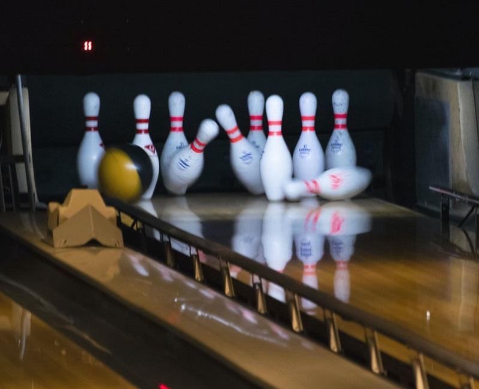
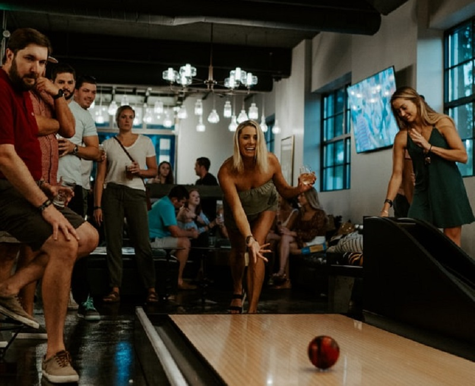
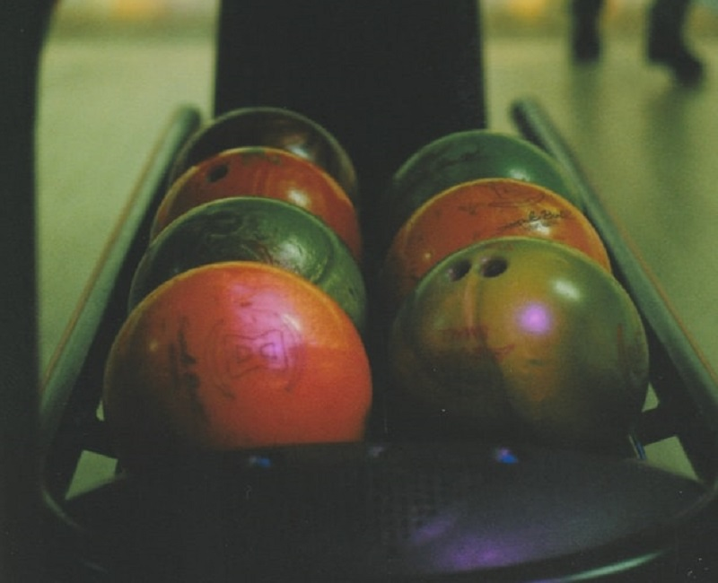

Guppy Aquapargi 0-korrusel ootab kõiki huvilisi 6 - rajaga bowlingusaal.
Bowlingusaal sobib suurepäraselt sünnipäevade, pidude, firmaürituste ja turniiride pidamiseks. Bowlingumäng on meeldiv ja aktiivne ajaviide. Lisaks kuuliveeretamisele saate nautida ka maitsvaid suupisteid ja karastavaid jooke.



Bowling (keegel ehk veeremäng) on mäng, milles veeretatakse kuule mööda siledat rada.
Harilikult on mängu eesmärk võimalikult palju kurikaid maha ajada.
Meie kuulsaalis on mängijate käsutuses 8 bowlingurada, 6 piljardi- ja 1 snuukeri lauda, 1 vene piljardi laud ning uudisena 2 lauatennise lauda, lisaks avatud vaatega lounge-baar, mahutades ühtekokku 200 inimest. Bowlingu- ja piljardisaali muudavad eriliseks õdus interjöör ning päeva ja õhturežiimide valguslahendus, Eesti uusim rajaprogramm ning salaaken mis tehnikaruumi avarusi näitab.
Rõõmustamiseks on põhjust ka väikelaste vanematel - oleme loonud kõrvale spetsiaalse tegevus- ja ronimisala MUUUV Seiklusmaa kus samal ajal kui lapsevanemad bowlingurajal punkte püüavad, saavad nende väikesed järeltulijad lõbusalt mängida.
Guppy Bowling sobib suurepäraselt sünnipäevade pidamiseks, koolidele,lasteaedadele mängupäevade korraldamiseks, firmadele jõulupidude ja muude ürituste pidamiseks!
Hinnad: